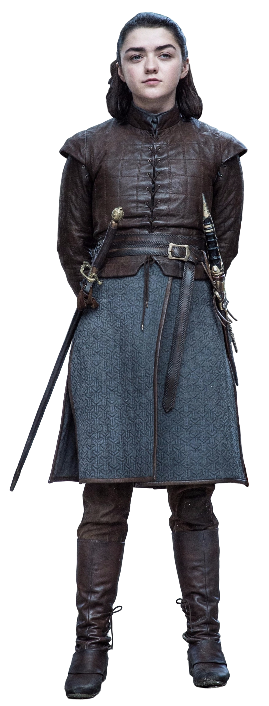

ABOUT NO ONE 20 MAY 2019Arya Stark is a fictional character in American author George R. R. Martin's A Song of Ice and Fire epic fantasy novel series. She is a prominent point of view character in the novels and is the only viewpoint character to appear in every published book of the series.
Introduced in 1996's A Game of Thrones, Arya is the younger daughter and third child of Lord Eddard Stark and his wife Lady Catelyn Stark. She is tomboyish, headstrong, feisty, independent, disdains traditional female pursuits, and is often mistaken for a boy. She wields a smallsword named Needle, a gift from her half-brother, Jon Snow, and is trained in the Braavosi style of sword fighting by Syrio Forel.
Arya is portrayed by English actress Maisie Williams in HBO's Emmy-winning television adaptation of the novel series, Game of Thrones.[1][2] Her performance has garnered critical acclaim, particularly in the second season for her work opposite veteran actor Charles Dance (Tywin Lannister) when she served as his cupbearer.[3] She is among the most popular characters in either version of the story.[4][5] Williams was nominated for a Primetime Emmy Award for Outstanding Supporting Actress in a Drama Series for the role in 2016.[6] She and the rest of the cast were nominated for Screen Actors Guild Awards for Outstanding Performance by an Ensemble in a Drama Series in 2011, 2013, 2014, 2015, 2016 and 2017.